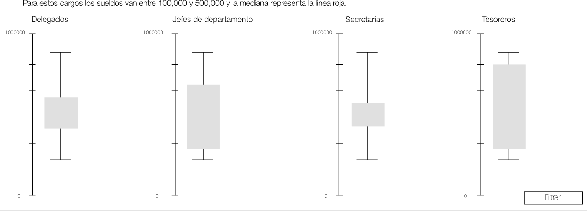
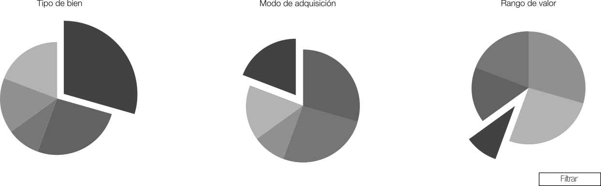
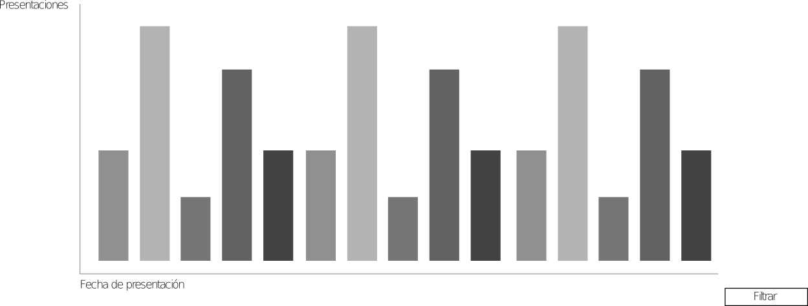
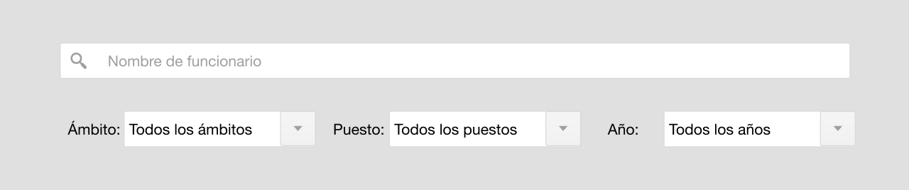

Valores y sueldos
Declaración de bienes inmuebles
Fechas de declaración
Búsqueda
Maecenas venenatis gravida lorem, finibus consequat mi rutrum non. Nam scelerisque et arcu at congue. Maecenas nec elit rhoncus felis bibendum cursus. Proin fermentum lacus in risus rhoncus malesuada. Nullam consequat nisl lorem, sed vestibulum risus interdum ut. Donec urna sem, accumsan nec facilisis sed, interdum vel ex.
